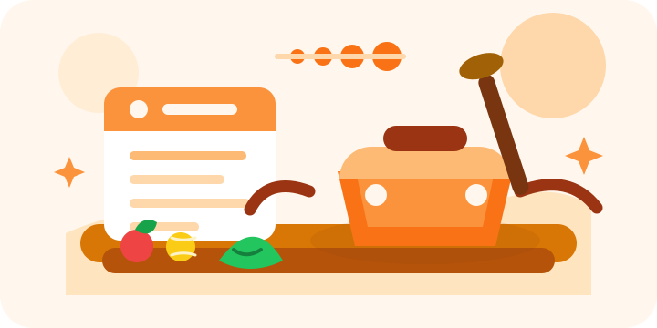

Recipes are not the shortage.
The real shortage is confidence that a recipe fits tonight's time, skill, cleanup tolerance, and household constraints.
Step 1 of 4
Design rationale
This view mirrors the presentation notes in docs/onboarding-rationale.md and documents the latest desktop-only onboarding pass: 3 grouped screens + 1 review screen, one progress system (`Step 1 of 4`), two-column decision/design pattern, brand-only setup sidebar, and consistent selected-state treatment across cards, chips, and inputs.
Step 1 of 4 plus a single progress bar.
Duplicate progress representations and old Start/Window/Guidance/Food/Timing/Save pills were removed.
Users track progress from one location with less visual overhead.
The real shortage is confidence that a recipe fits tonight's time, skill, cleanup tolerance, and household constraints.
The product optimizes for one saved recipe and one cook attempt in seven days, not a full identity shift into "home cook."
Onboarding answers seed recommendations, but dashboard filters let users change context without retaking setup.
Home remains the primary nav item because the app's job is to move the user from setup to a usable cooking plan.
During desktop onboarding, the sidebar should show brand/logo only because full navigation suggests the app is usable before setup is complete.
Every onboarding prompt maps to recipe ranking, instruction detail, grocery scope, serving quantity, or saved-plan language.
Desktop onboarding keeps choices in the left column and reserves the right column for compact illustration or live summary.
Labels should name the actual task group, such as cooking routine, recipe support, food boundaries, or review recipe.
Each question should present a maximum of three primary choices so users can decide quickly without feeling over-profiled.
Each grouped screen now has one forward action and one Back action so users can correct choices without extra tap choreography.
Desktop progress is a single system: `Step 1 of 4` and a compact progress bar.
Cards, chips, inputs, and actions should share one selected-state language so users can scan decisions without relearning the UI.
Copy uses planning-friendly phrases like "this cooking window" so the app supports future meals, grocery prep, and immediate dinner.
Saving a recipe should trigger food-icon celebration and a visible milestone without making cooking feel mandatory.
A visible reset path lets users replay onboarding for feedback, testing, or stale personalization recovery.
Progress pings, keyframes, and celebratory icons should pause or simplify when the user prefers reduced motion.
The current refinement is desktop-only. It does not claim new mobile onboarding behavior; mobile layout decisions should be handled in a later pass.
The left column owns the headline, helper copy, grouped question cards, and sticky bottom actions so the user's next decision stays in one lane.
The right column stays compact with a cooking illustration or live summary, helping context stay present without becoming another control surface.
Progress is `Step 1 of 4` with one compact bar, with no category pills, count chips, or extra tabbed milestones.
During setup, desktop shows the HomeStart brand/logo only because navigation implies the app is usable before setup is finished.
The welcome screen is desktop-only and uses one compact sequence: 3 grouped screens plus a review screen.
Progressive groups keep each screen to meaningful related prompts: routine, support, and food boundaries.
Frequency, preferred cooking mode, and dinner window are grouped to reduce friction and clarify effort model.
Skill level and instruction style are captured together so initial recipe matches stay realistic.
Restrictions (multi-select), ingredient tolerance, and servings are collected in one decision area.
Summary chips, category tabs, a two-card recipe carousel, optional Save recipe, and Edit preferences are shown before dashboard handoff.
Copy avoids "build your perfect profile" language. The promise is "start with one doable meal," which is easier to accept.
Selected cards, chips, inputs, and actions should use the same border, fill, and emphasis logic so the UI confirms decisions without extra decoration.
The progress bar should move from quiet grey toward orange as confidence builds. A single solid color is clearer than a gradient that can imply multiple statuses.
Each milestone can emit one small ping that grows slightly by stage. It acknowledges progress without creating continuous motion.
Celebration should use food icons and cooking cues so the saved-recipe moment feels connected to the product, not like generic confetti.
Recipe cards should rely on stock/free food photography for visual evidence, while UI actions use one Lucide icon family instead of mixed-weight symbols.
State-driven CSS or WAAPI-style animations should have a reduced-motion path: no ping scale, no icon burst travel, and instant progress state changes.

Presets such as quick rescue, prep once, confidence builder, and pantry fallback translate common cooking moods into one tap.
Advanced controls expose time, skill, ingredients, dietary rules, servings, cleanup, and guidance style only when users need precision.
Recipe cards should state why they appear: "fits 20 minutes," "batch-friendly," "short ingredient list," or "step-by-step beginner guidance."
Dashboard text should shrink after onboarding; recipe photos, match reasons, save actions, and filters carry the proof.
Show a small, curated result set before asking the user to tune every dimension.
Advanced filters sit behind clear affordances so they help power users without overwhelming beginners.
A preset is a current cooking mode, not a permanent profile label.
Users need an obvious way to replay onboarding during feedback/testing or recover from stale personalization.
The app should learn from saved recipes over time instead of asking a long cuisine quiz up front.
A side dock keeps saved recipes visible next to filters and recommendations, reinforcing the first commitment while users compare options.
The dock can collapse or stack under results so planning remains readable during couch, kitchen, or grocery-list use.
Saved recipes become a dedicated mobile tab because a persistent side dock would crowd the one-column recommendation flow.
Use plain-language skill choices, beginner-safe defaults, and confidence-builder filters.
Capture usual time in onboarding, then let the dashboard adapt to the selected cooking window.
Personalize instruction density and surface recipes with clearer timing and doneness cues.
Translate healthy into concrete levers such as vegetables, protein, lighter takeout swaps, and ingredient count.
Apply hard dietary rules before softer preference ranking to protect trust.